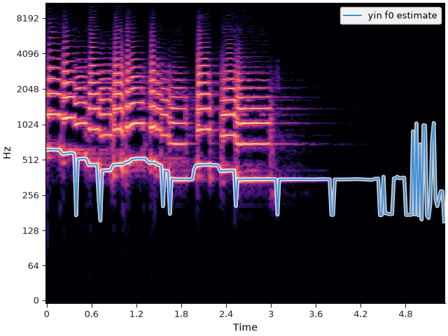
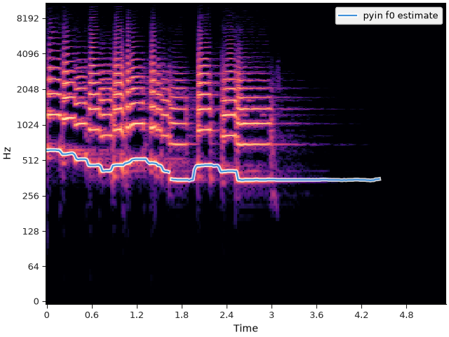

Note
Go to the end to download the full example code.
Fundamental frequency#
This section demonstrates how to extract the fundamental frequency (f0) from an audio recording.
Fundamental frequency#
The Fourier transform allows us to represent any time-domain signal as a combination of pure sinusoids at a well-defined set of frequencies. If a signal repeats itself exactly after some finite amount of time—known as the fundamental period, and denoted by t0—then we say that it has a fundamental frequency, which is typically denoted as f0 = 1/t0.
The discrete Fourier transform implicitly assumes that all signals repeat after the duration of the signal has elapsed, so the length of the signal is a trivial period. What makes t0 fundamental is that it is the shortest repeating period in the signal.
The fundamental frequency of a signal, if it exists (and it may not!), is strongly related to what we perceive as pitch, at least in signals where only one note is playing at a time, and estimating the fundamental frequency is often a first step in tasks like melody analysis.
Like the Fourier transform as discussed in the previous section, the definition of fundamental period and frequency given above is a bit too strict for practical applications where frequency content changes over time. And again, we will relax this restriction by focusing on short regions of time where the frequency content is likely to be stationary, generally resulting in an f0 estimate for every time step.
We will demonstrate here two commonly used algorithms for estimating fundamental frequency in monophonic signals. Note that these are not appropriate for polyphonic signals, and different methods for multiple f0 analysis or chord recognition may be more appropriate.
f0 estimation with yin#
We’ll continue with the trumpet example from the previous section. This recording includes a solo trumpet playing a short sequence of notes, with a few regions of silence.
import librosa
import matplotlib.pyplot as plt
from IPython.display import Audio, HTML
# Load the signal
y, sr = librosa.loadx("trumpet")
HTML(librosa.util.example_info("trumpet", html=True))
Create a display object for listening
Audio(url=librosa.example("trumpet", url=True))
The method that we’ll use first is known as yin. It essentially works by carving the input signal y into short frames, computing the correlation of each frame with itself, and identifying a time lag offset that produces a strong correlation.
Note
There are many nuances and subtle details in how this is implemented.
If you’re interested in learning more, refer to the librosa.yin documentation
and the original paper:
De Cheveigné, Alain, and Hideki Kawahara.
"YIN, a fundamental frequency estimator for speech and music."
The Journal of the Acoustical Society of America 111.4 (2002): 1917-1930.
To call yin, we need to provide the signal and sampling rate, as well as bounds on the range of frequency values to consider. If we’re interested in pitched sounds, typical human hearing covers approximately 30 Hz to 20 KHz. Since we know the signal in question is a trumpet, we can reduce this range considerably because trumpet notes are typically between F#3 (around 185 Hz) and C6 (around 1047 Hz). To allow for a bit of wiggle room, we can extend this a bit, and set the minimum and maximum frequencies to 150 HZ and 1100 Hz, respectively.
The output of the code above is an ndarray f0 that contains a fundamental frequency estimate for every time step in the input signal y, measured at the standard hop length of 512 samples (~23ms).
We can plot this f0 estimate over a spectrogram display to get a sense of how well it worked.
fig, ax = plt.subplots()
stft = librosa.stft(y)
times = librosa.times_like(f0)
librosa.display.specshow(stft, vscale="dBFS",
x_axis="time", y_axis="log", ax=ax)
hl = librosa.display.highlight(ax=ax, alpha=0.8, linewidth=4)
ax.plot(times, f0, label="yin f0 estimate", path_effects=hl)
ax.legend(loc="upper right")

From the above figure, we can see that the yin method did an okay job of tracking the pitch of the trumpet, but it is by no means perfect. There are a few specific shortcomings of the yin method worth noting here:
It assumes that every frame has a fundamental frequency. This assumption is not valid in silent regions (e.g., the end of the signal above), and results in unstable behavior.
It does not do much to enforce continuity of f0 estimates, leading to abrupt jumps in the estimated values (e.g. between notes).
Both of these shortcomings are addressed by the next method in our toolbox, pyin.
f0 estimation with pyin#
The pyin algorithm, or probabilistic yin, extends the idea of the yin algorithm in two ways:
pyin models continuity in time by using a Markov chain.
- pyin can estimate whether or not each frame has a fundamental frequency.
Frames with a fundamental frequency are denoted as voiced, and those without a fundamental frequency are denoted as unvoiced.
The pyin method is a bit more complicated than yin, though it shares many of the
same parameters, such as the minimum and maximum frequencies.
As return values, it provides the fundamental frequency estimate f0,
a True/False array voiced_flag that indicates whether each frame is voiced or unvoiced,
and an array voiced_probs that gives the probability of each frame being voiced.
Any frames that are estimated as unvoiced will by default receive an f0 value of np.nan.
pyin_f0, voiced_flag, voiced_probs = librosa.pyin(y=y, sr=sr, fmin=150, fmax=1100)
fig, ax = plt.subplots()
librosa.display.specshow(stft, vscale="dBFS",
x_axis="time", y_axis="log", ax=ax)
hl = librosa.display.highlight(ax=ax, alpha=0.8, linewidth=4)
ax.plot(times, pyin_f0, label="pyin f0 estimate", path_effects=hl)
ax.legend(loc="upper right")

The pyin estimate much more closely follows the pitch of the trumpet, without the abrupt jumps between notes, and without estimating f0 in silent regions.
Summary#
This section introduced the notions of pitch and fundamental frequency. The f0 estimation methods described above (yin and pyin) are well adapted to signals with a clear and prominent monophonic source. However, they are not appropriate for analyzing signals with polyphony or harmony, which are covered in the next section.
Total running time of the script: (0 minutes 0.886 seconds)